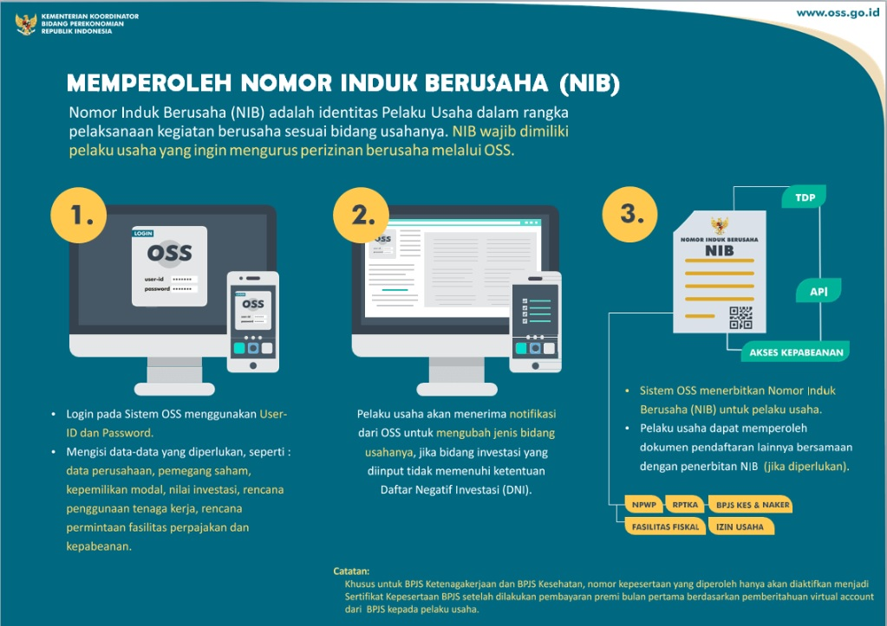

"Kemudahan berusaha dalam berbagai skala turut didorong Pemerintah dengan reformasi struktural, termasuk dengan reformasi sistem perizinan. Penerapan Pelayanan Terpadu Satu Pintu (PTSP) dan Online Single Submission (OSS) diharapkan efektif mengurangi birokrasi dan mempermudah para pelaku usaha. Pemerintah sudah menjalankan Online Single Submission (OSS) sebagai sistem yang mengintegrasikan seluruh pelayanan perizinan berusaha yang menjadi kewenangan Menteri/Pimpinan Lembaga, Gubernur, atau Bupati/Walikota yang dilakukan secara elektronik. Melalui reformasi sistem perizinan, kita mendorong standardisasi menjadikan birokrasi perizinan di tingkat pusat dan daerah lebih mudah, lebih cepat, dan juga lebih terintegrasi." Joko Widodo, 16 Agustus 2018 "
Untuk info lebih lengkap silahkan kunjungi web resmi OSS Klik disini
